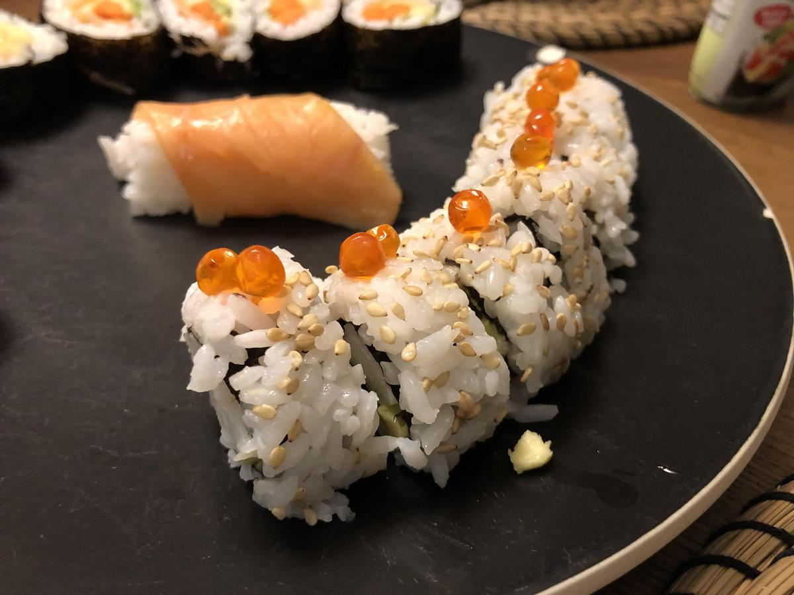

Based on https://makemysushi.com/Recipes/how-to-make-california-sushi-rolls
Personal rating: 1 / 5

6 sticks Surimi (Imitation crab)
1/2 avocado
cucumber
sesame seeds
sushi rice
Nori
Masago (flying fish roe) or Tobiko
Cut the Nori sheet in half. Spread rice over the Nori and top with sesame seeds, then flip rice side down
Add strips of the Surimi, avocado, cucumber, and choice of fish roe then roll